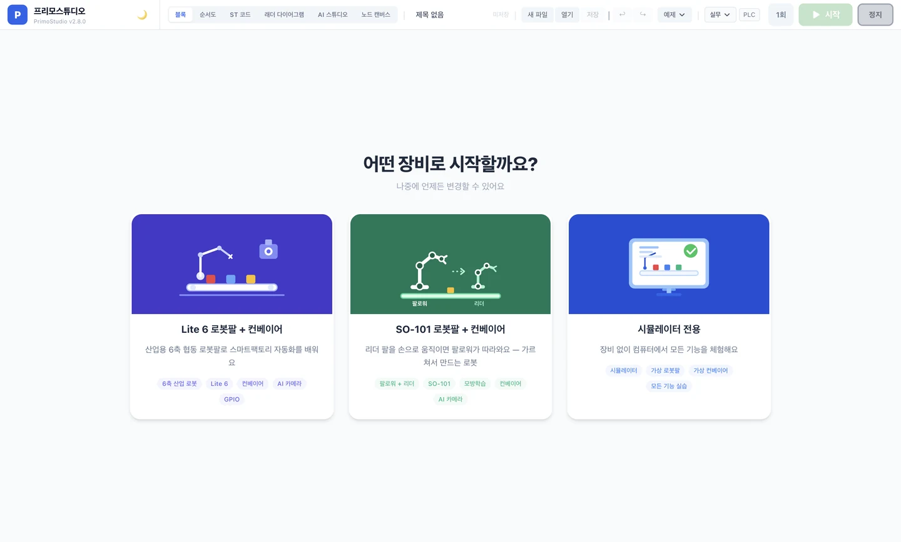
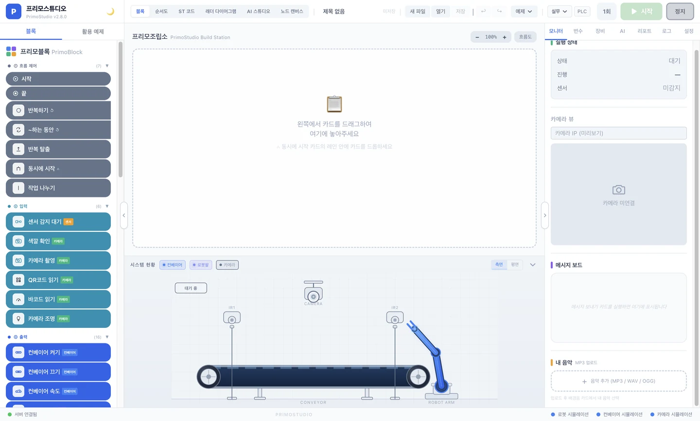

키트 선택¶
사용할 하드웨어 키트를 선택하면 메인 화면으로 진입합니다.
무엇을 하는 단계인가요?¶
프리모스튜디오 첫 실행 시 보이는 키트 선택 화면에서 사용할 키트 한 개를 선택합니다. 키트 종류에 따라 사용 가능한 카드·기능·하드웨어 연결 옵션이 달라집니다.
키트 변경 자유
선택은 나중에 언제든 변경 가능합니다. 첫 사용 시 망설임 없이 가까운 키트를 선택하세요.
키트 선택 화면¶
첫 실행 또는 키트 변경 시 화면 가운데에 다음 안내와 함께 키트 카드 3개가 표시됩니다.

어떤 장비로 시작할까요?
나중에 언제든 변경할 수 있어요
-
Lite 6 로봇팔 + 컨베이어
산업용 6축 협동 로봇팔로 스마트팩토리 자동화를 배워요
6축 산업 로봇컨베이어AI 카메라GPIO -
SO-101 로봇팔 + 컨베이어
저가 서보 로봇팔로 관절 제어와 모방학습을 체험해요
6축 서보 로봇모방학습컨베이어AI 카메라 -
시뮬레이터 전용
장비 없이 컴퓨터에서 모든 기능을 체험해요
시뮬레이터가상 로봇팔모든 기능 실습
3가지 키트 비교¶
| 키트 | 설명 | 권장 대상 |
|---|---|---|
| Lite 6 로봇팔 + 컨베이어 | 산업용 6축 협동 로봇팔로 스마트팩토리 자동화를 배워요 | 산업 자동화 학습, 고등·전문대 |
| SO-101 로봇팔 + 컨베이어 | 저가 서보 로봇팔로 관절 제어와 모방학습을 체험해요 | 로봇 제어 입문, 중·고등 |
| 시뮬레이터 전용 | 장비 없이 컴퓨터에서 모든 기능을 체험해요 | 첫 학습, 하드웨어 없는 환경 |
키트별 활성 기능¶
| 기능 | Lite 6 | SO-101 | 시뮬레이터 |
|---|---|---|---|
| 로봇팔 제어 | ✅ | ✅ | ✅ (가상) |
| 컨베이어 제어 | ✅ | ✅ | ✅ (가상) |
| 카메라 비전 | ✅ | ✅ | ✅ (가상) |
| GPIO 카드 | ✅ | ✅ | ⬜ |
| MQTT 통신 | ✅ | ✅ | ⬜ |
| 펌웨어 업데이트 | ✅ | ✅ | ⬜ |
절차¶
- 첫 실행 후 표시되는 키트 선택 화면에서 3개 카드 중 하나 클릭
- 카드 테두리에 컬러가 표시되고 "선택됨" 배지가 나타납니다
- 잠시 후 메인 화면 (프리모블록 에디터) 으로 자동 진입
- 좌측 카드 팔레트에 선택한 키트에서 사용 가능한 카드만 표시됨
키트 변경하기¶
수업 중간에 다른 키트로 바꾸려면:
- 메인 화면 우측 상단 ⚙️ (설정) 탭 클릭
- 📦 장비 키트 섹션으로 이동
- 현재 선택된 키트명 옆 [변경] 버튼 클릭
- 키트 선택 화면으로 돌아가면 다른 키트 선택
작업 흐름은 유지됨
작업 중인 흐름은 사라지지 않습니다. 단 새 키트에서 지원하지 않는 카드는 표시되지 않을 수 있습니다 (예: 시뮬레이터로 변경 후 GPIO 카드).
자주 발생하는 문제¶
키트 카드가 한 개도 안 보임
백엔드 (Python) 가 시작되지 않았을 가능성이 높습니다. 첫 실행 → 자주 발생하는 문제 의 "키트 선택 화면이 나타나지 않음" 항목을 참고하세요.
키트 선택 후 변경했는데 카드가 사라짐
새 키트에서 지원하지 않는 카드는 자동으로 비활성화됩니다. 예를 들어 Lite 6 → 시뮬레이터로 변경하면 일부 GPIO 관련 카드가 사라지지만, 저장된 흐름 자체는 사라지지 않습니다 — 다시 호환되는 키트로 변경하면 카드가 복원됩니다.
키트 카드의 태그가 무엇인가요?
각 키트 카드 하단의 작은 라벨은 해당 키트에서 사용 가능한 주요 기능 요약입니다 (예: 6축 산업 로봇, AI 카메라, GPIO). 학생에게 어떤 키트가 어떤 기능을 다루는지 한눈에 보여주기 위한 표시입니다.
강사 팁¶
첫 학습은 시뮬레이터로 시작 권장
학생이 카드 사용법·실행 흐름·디버깅 방법에 익숙해진 후 실제 하드웨어 키트로 전환하면 시행착오가 크게 줄어듭니다.
수업 키트가 정해져 있다면 첫 실행 시점에 일괄 안내
"오늘은 Lite 6 키트를 선택하세요" 라고 학생들에게 미리 안내하면 막히는 학생이 거의 없습니다.
키트 변경은 자유롭게
같은 학생이 시뮬레이터로 학습 → 다음 차시 실제 키트로 전환할 때 키트 변경 기능을 편안하게 사용하도록 안내해 주세요.

다음 단계¶
키트 선택을 마쳤다면 하드웨어 연결 → 으로 이동해 실제 장비를 연결합니다. (시뮬레이터 모드 선택 시에는 프리모블록 → 으로 바로 이동해도 됩니다.)
이 페이지에 빠진 내용이나 잘못된 부분을 발견하시면 페이지 하단 📮 피드백 보내기 를 활용해 주세요.